Motivation
The idea behind my proposal is to underline the lovely Swiss nature. I want to render a complicated forest scene in the morning. The scene should contain a rarely used train track on which you can see a very old Swiss made train approaching. The train will be a steam locomotive, which emits a lot of dark steam. Because the scene takes place in the morning it will be very foggy, so that you can see the sun rays passing through the forest canopy. Since I was not able to find a photograph which exactly fits my thoughts, I decided to take multiple photographs and combine their best elements. In the following part I will explain which features I want to implement to achieve the effects.
Forest
The following gallery shows a few photographs of forests in the morning and contains the volumetric light rays from the sun passing through the fog.
Tracks
For my final rendering I want to use the third forest image as a rough guide for the scene. I also want to add an old train track to the scene, which is covered by moss.
- 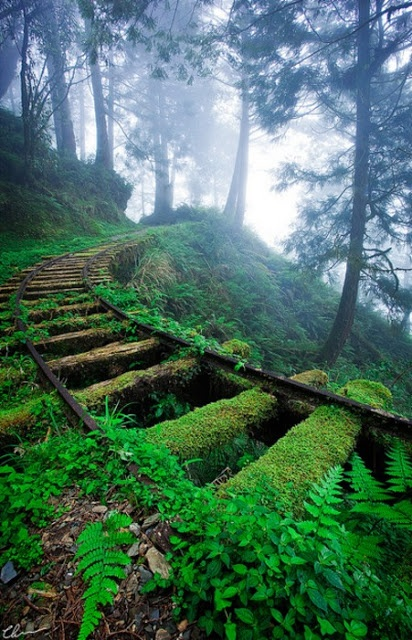
Train
As mentioned before, I also want to render a steam locomotive. I chose that photography, because it is a really nice perspective and the steam looks really impressive.
- 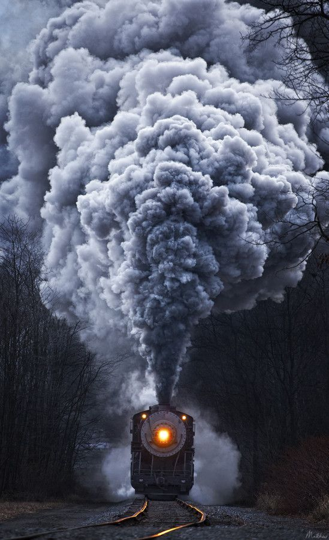
Texturing (5 Points)
To achieve a realistic floor with grass and rocks, I want to implement texture mapping. The UV coordinates should be stored in the obj file. Textures are implemented by loading exr files and applying them to the meshes. The pixel values from the image are bilinear interpolated.
Ironman
The image is rendered with direct emitter sampling and 512 spp.
- 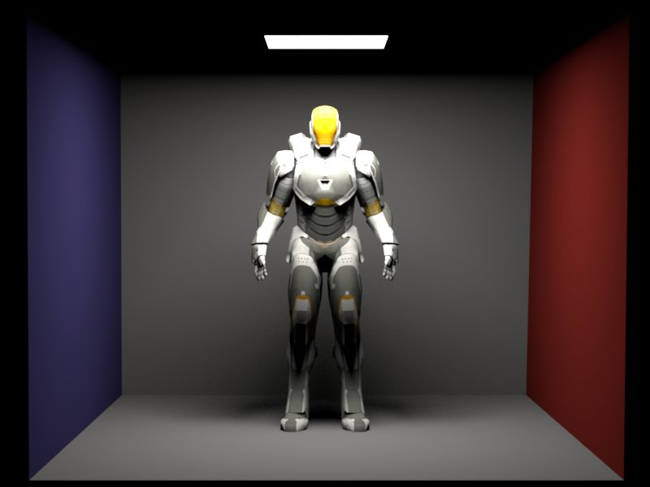
Ants
The image is rendered with direct emitter sampling and 512 spp.
- 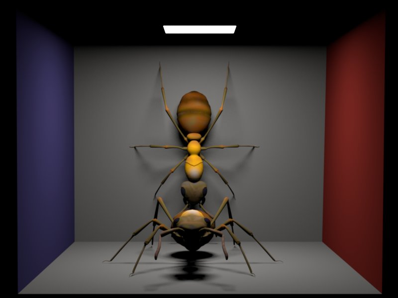
Validation
In this comparison I render a UV validation scene with direct emitter sampling with 512 spp and the same scene with photon mapping and 10.000.000 photons and a search radius of 0.5. As you can see, the photon mapping is a little bit brighter, because it takes the global illumination into account.
Source code
include/texture.h
Texture/imageTexture.cpp
Normal Mapping (5 Points)
I implemented normal mapping to add small perturbations to the floor. The normal maps are saved as exr files. They are loaded and interpolated in a similar fashion as image textures. The RGB values represent the normal in tangent space, which needs to be translated to world space using the surface normal, tangent and the bi tangent.
Validation
To validate normal mapping I rendered the same image with normal map and without normal map.
Source code
include/bumpTexture.h
Texture/singleBumpTexture.cpp
Perlin Noise (5 Points)
With Perlin noise I want to mix different types of textures or BSDF's and create new types of textures. It is also possible to mix their normal maps. We can see that the more levels we use, the lower are the frequencies we get.
Validation
Brick wall and moss
The image is rendered with direct emitter sampling and 512 spp. The Perlin noise map has size 128 x 128 and the threshold is 0.3 and we used 4, 8, 32 levels
- 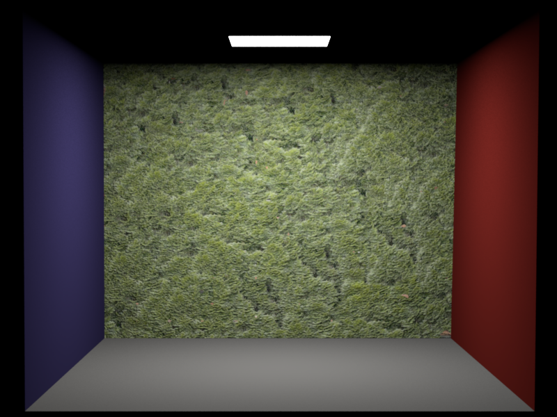
-

- 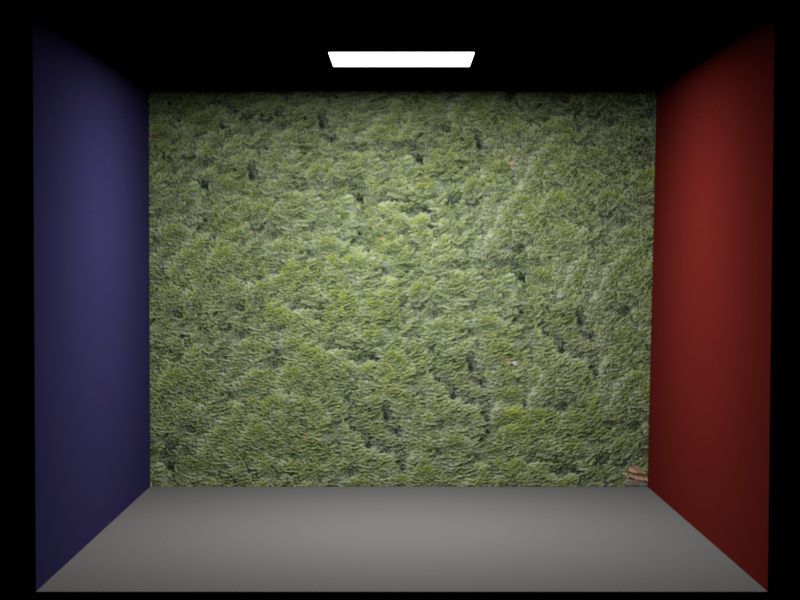
Brick wall and moss
The image is rendered with direct emitter sampling and 512 spp. The Perlin noise map has size 128 x 128 and the threshold is 0.6 and we used 4, 8, 32 levels.
- 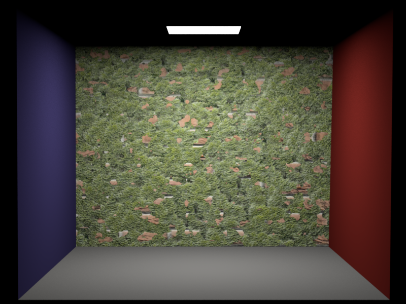
- 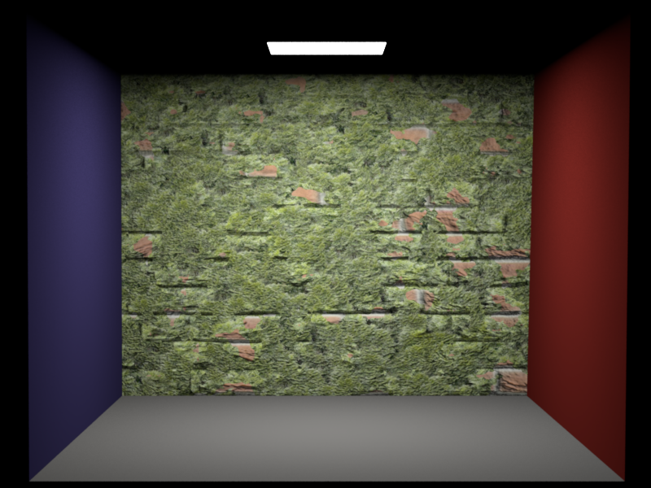
Brick wall and moss
The image is rendered with direct emitter sampling and 512 spp. The Perlin noise map has size 128 x 128 and the threshold is 0.9 and we used 4, 8, 32 levels
- 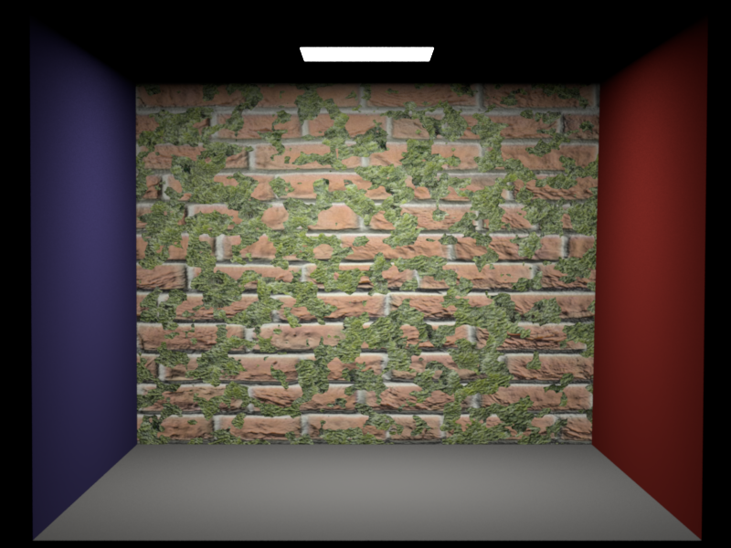
- 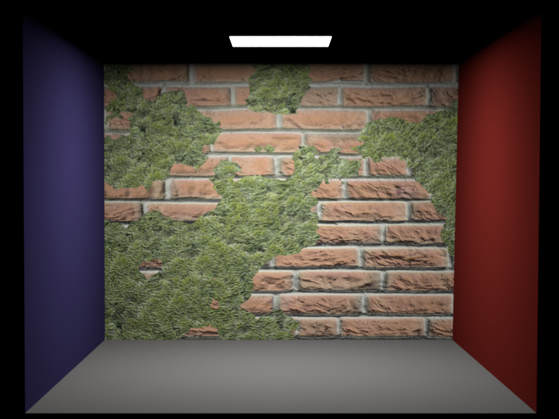
Source code
Texture/mixBumpmap.cpp
Texture/mixTexture.cpp
Texture/perlinTexture.cpp
Environment map emitter with importance sampling (15 Points)
Lighting with captured real-world lighting conditions ("light probes") is a relatively cheap and simple way to add considerable realism to a rendering. To reduce noise and converge faster to the right solution, the map needs to be importance sampled. The importance sampling is done by creating the CDF of the pixels radiance. We first sample a row using the discrete PDF of the row and after that, we use the radiance values in that row to sample a pixel. Due to the mapping from a rectangular image to an infinite sphere, we get a much denser pixel distribution around the poles. This can be taken care of by multiplying the PDF of the pixel with sin(theta), where theta is the angle between the normal and the sampled direction.
Perfect mirror
The image is rendered with path tracing with multiple importance sampling using 512 spp.
- 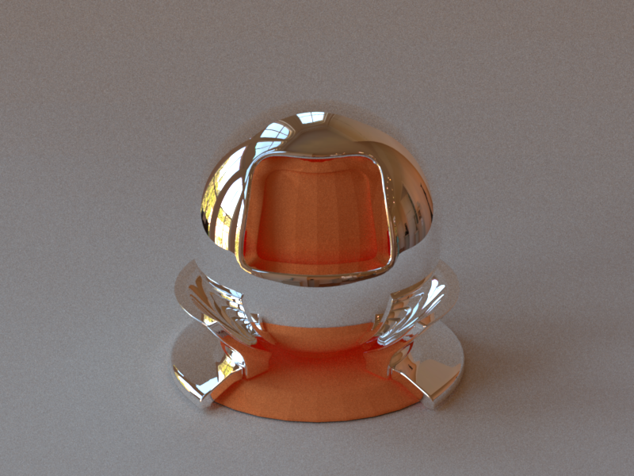
Glossy Mircofacet
The image is rendered with path tracing with multiple importance sampling using 512 spp.
- 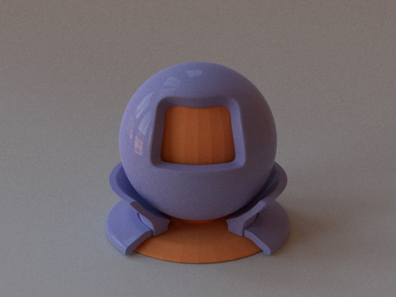
- 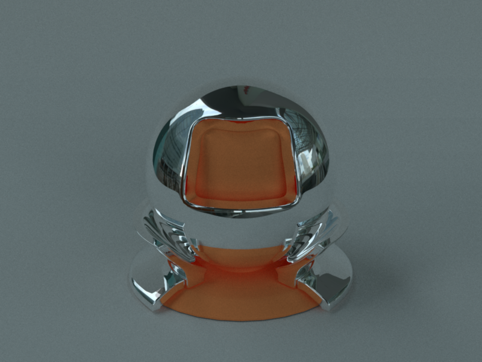
- 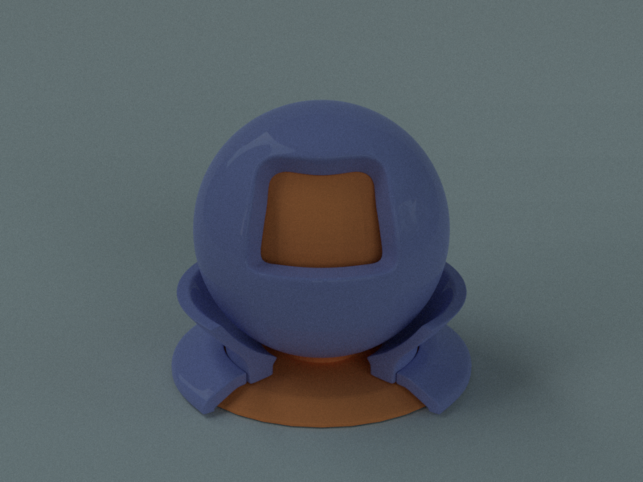
Validation
At the Window (Wells, UK)
Overcast day at Techgate Donaucity
Sampling and integrated density histograms
- 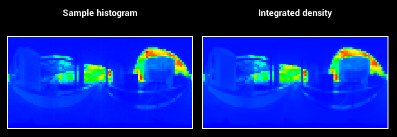
Source code
Emitter/envMapEmitter.cpp
Warp/HSWrapper.cpp
Warp/warp.cpp
Warp/warptest.cpp
Volumetric Photon mapping with beam radiance estimate (30 Points)
I implemented volumetric photon mapping with homogeneous media using the Henyey Greenstein and Schlick phase function with importance sampling. The first step is to store the photons not only on the surfaces, but also change the photon shooting, to be able to store photons also in volumes. After the photon shooting is done, we need to assign a radius to each photon, depending on the distance to the k nearest neighbor. K is depending on the number of shot photons and the scene size. The next step is to create a bounding box hierarchy using the kd - tree and the photon radius. To be able to render volumes it is also necessary to implement a ray BBH intersection, which returns all photons where the ray intersects the attached sphere.
Validation
Phase functions
The following images show the Henyey Greenstein and Schlick phase function for forward, backward and isotropic scattering. I implemented a warpping test for both phase functions and both passed the chi square test. For Henyey Greenstein parameter g I used -0.9, 0.0 and 0.9 and for the Schlicks parameter K used the same values. If the phase function should match exactly k is defined as k = = 1.55 * g - 0.55 * g * g * g.
Backward
Isotropic
Forward
Backward
Isotropic
Forward
Validation with basic volumetric path tracing
I also implemented basic volumetric path tracing to be able to validate my implementation. Therefor I created a very simple scene, containing only 1 light and 1 isotropic medium.
Equal render time ~8.5 seconds
In this image I rendered the scene with the same rendering time for both integrator. For path tracing I used 46 spp and for photon mapping I used 10.000 photons with k equal to 100. We can clearly see that photon mapping has less noise, but we can also see the bias introduced by blurring.
Equal quality
In this image I tried to get the same quality with photon mapping and path tracing. I used 1.000.000 photons and for path tracing 1512 spp. In path tracing we can still see some noise. But the overall appearance between both is similar.
Validation with spot lights
The following validation scene compares the classical Cornell box with a spot light rendered with volumetric photon mapping with ray marching and with beam radiance estimate. It is clearly visible that ray marching with a fixed radius blurs the image and the beam radiance can preserve the sharp cone of the spot light.
Validation of the homogeneous media
To validate the transmittance and the scattering behavior I implemented a small program in C++ with libigl, which takes the positions of the photons as an OFF file, their volume bounding box and visualizes them. In next comparison I put an area light inside a medium and changed the phase function to be forward and backward scattering. We can clearly see the position of the area light and also that there are much more photons stored behind the area light, if the medium is backward scattering.
Source code
Integrators/beamRadianceEstimate.cpp
Volumes/homogeneousVolumeDensity.cpp
include/nori/phaseFunction.h
include/nori/kdtree.h
include/nori/photon.h
include/nori/volume.h
Warp/warptest.cpp
Warp/HenyeyGreenstein.cpp
Warp/Schlick.cpp
Warp/warp.cpp
Basic volumetric path tracing
Source code
Integrators/basicVolumentricPathTracer.cpp
Volumetric photon mapping with ray marching
Source code
Integrators/volumetricPhotonmapper.cpp
spot lights
Source code
Emitters/spotLight.cpp
Directional Area Lights
To be able to create sharp light paths I implemented directional area lights. The only difference is that they can only shoot photons in the direction of their normal. This comparison shows the same scene with a normal area light and a directional area light.
Source code
Emitters/arealight.cpp
include/nori/arealight.h
Textured Area Lights
Another very nice feature is textured emitters, which is basically a mesh with a texture assigned to it. If we want to importance sample the light we use the same method as in the environment map, otherwise we just look up the radiance in the image. If you combine the feature with homogeneous media you can get very nice effects like this one.
- 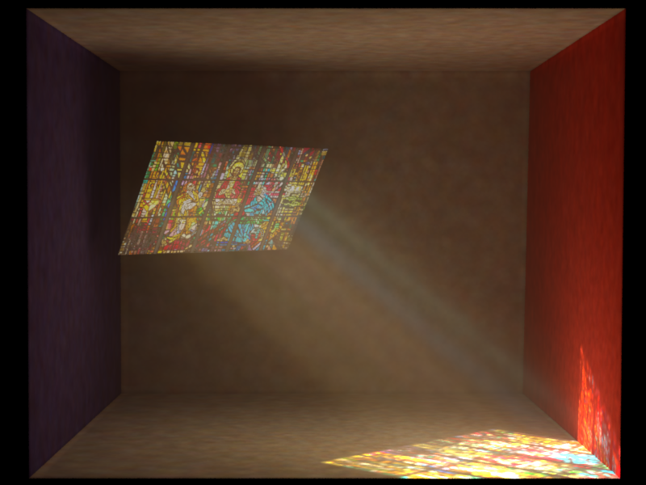
Source code
Emitters/textureEmitter.cpp
Modeling
I modeled my scene completely in Blender, all meshes were available for free and some parts I modeled myself.
- 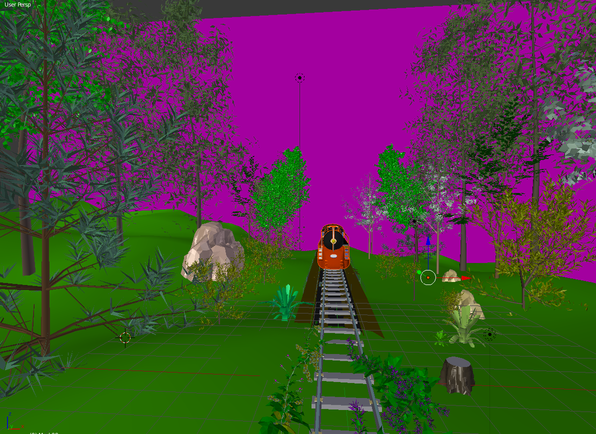
- 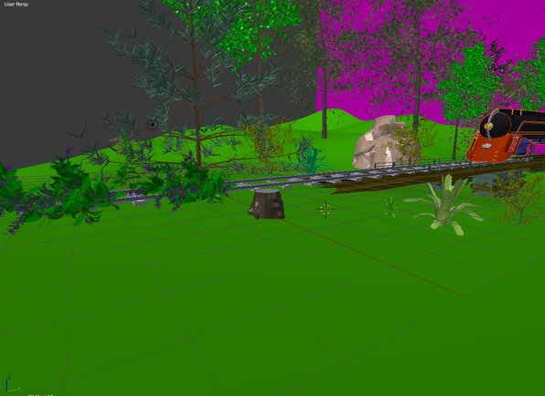
- 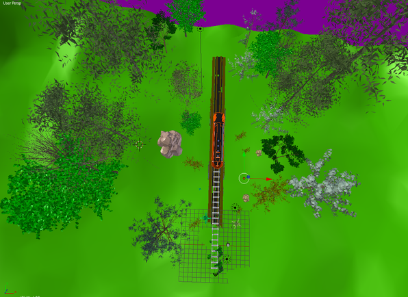
- 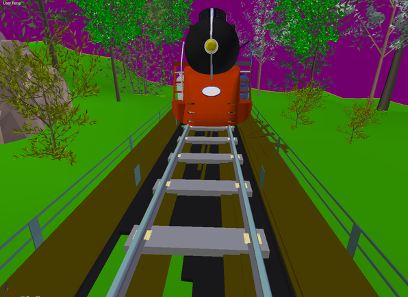
My final image
My final image is a forest scene very early in the morning, in which a train is passing through. It is very close to my motivational images, expect the heterogeneous smoke, which was not possible for me to model.
- 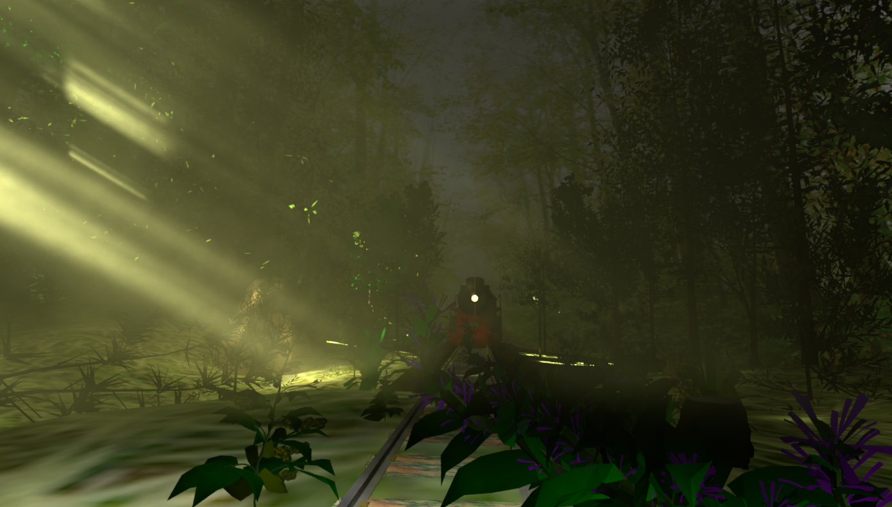
Acknowledgments
-
The background image is from Warner Boutique
-
The first forest image is from Diviant art
-
The second forest image is from Land scapes
-
The third image is from YouWall
-
The image of the train tracks is from bia2online
-
The train image is from pinterest
-
The light probes are from Berhard Vogl